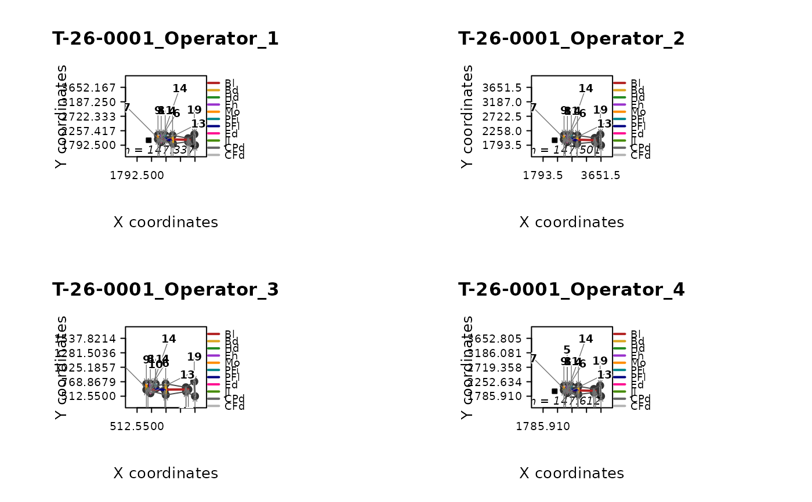
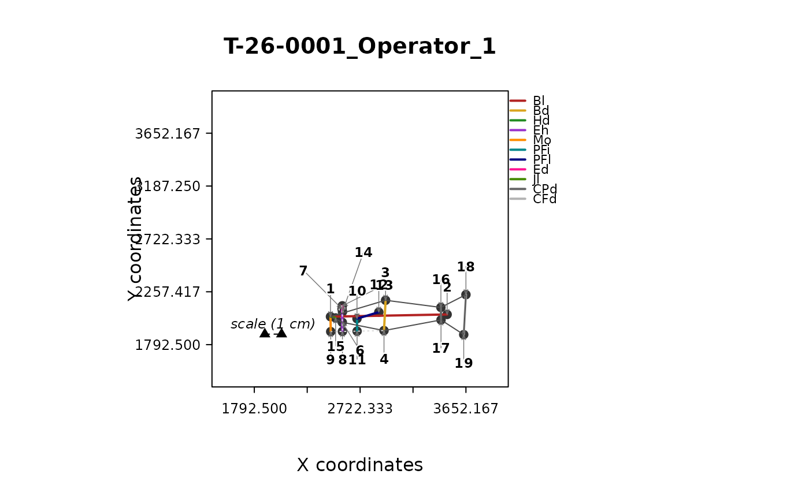
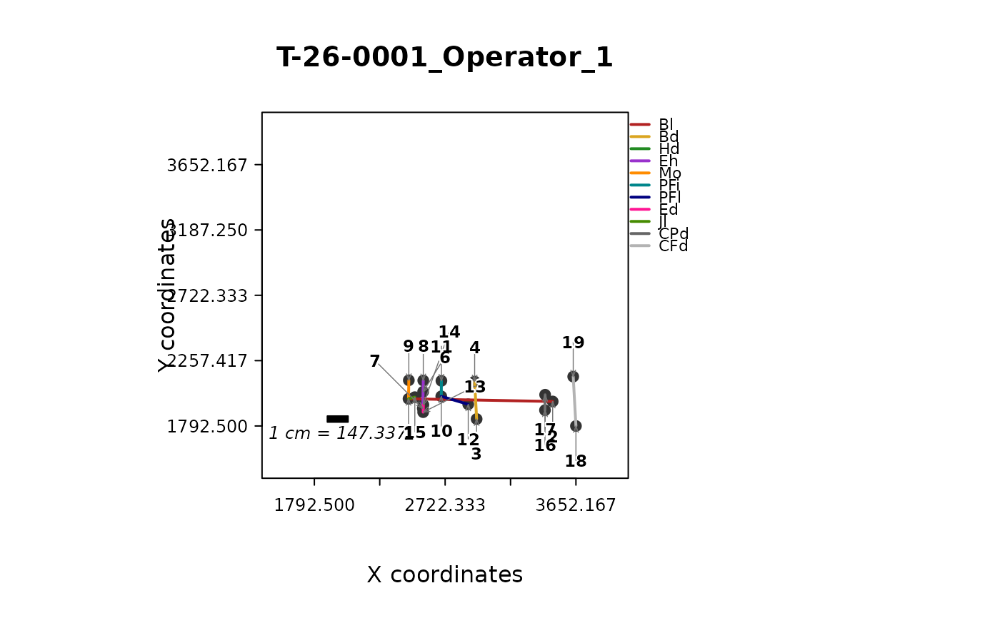
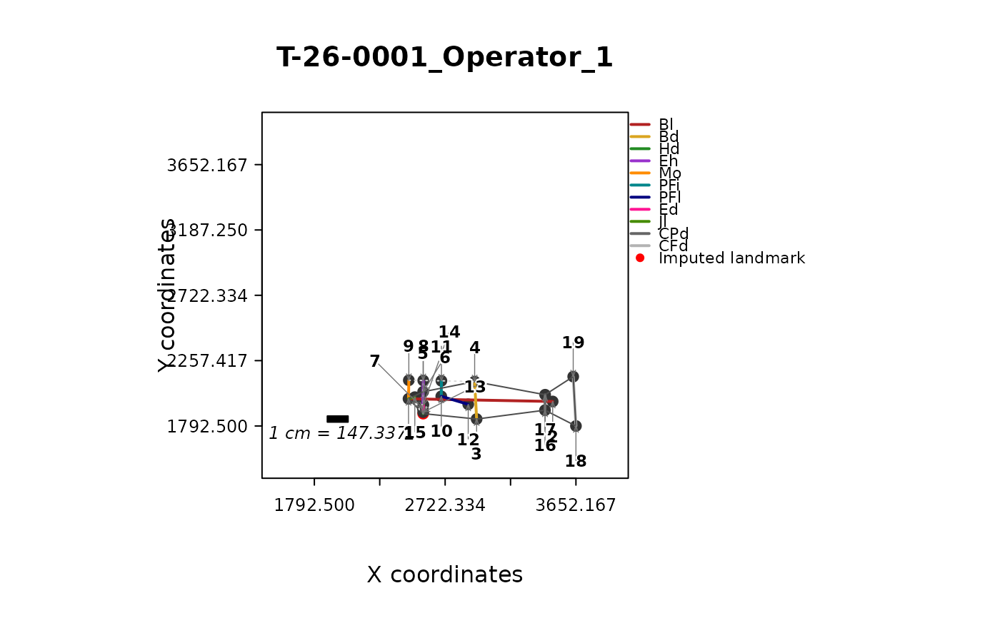
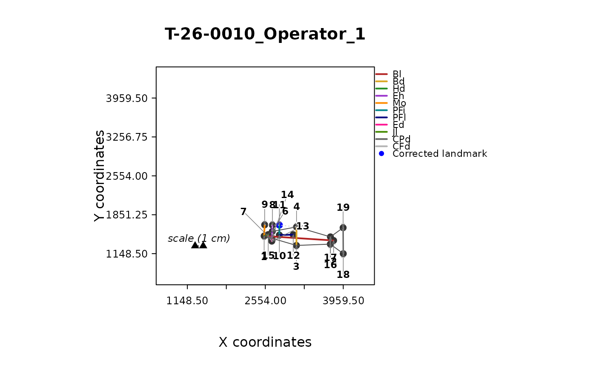
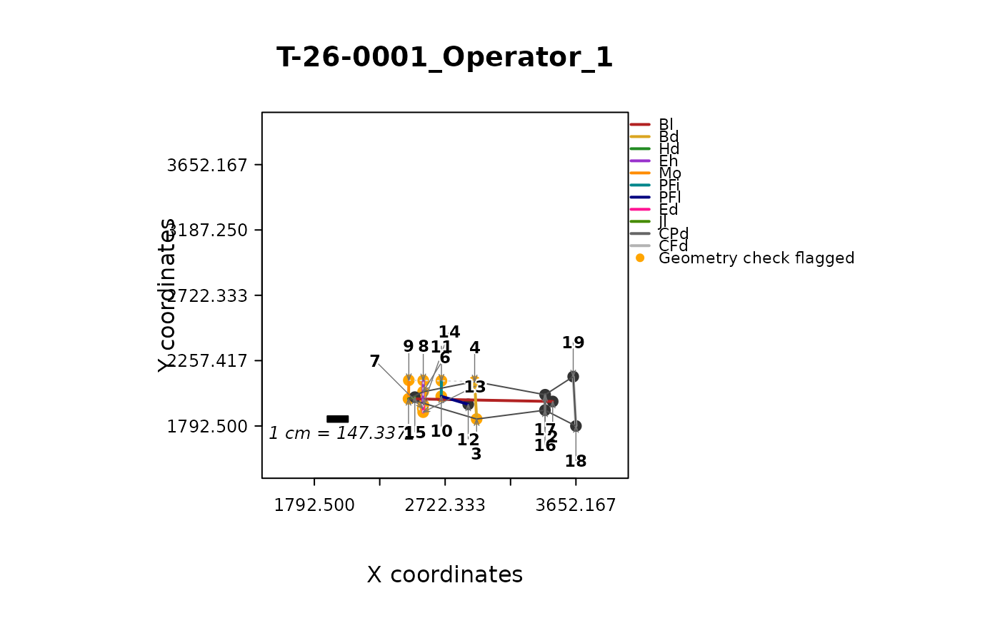

Plot a specimen following the FISHMORPH point digitization scheme
Source:R/plot_fishmorph_points.R
plot_fishmorph_points.RdVisualises the 21 (or 22) landmarks of one specimen, digitized following the Brosse et al. (2021) FISHMORPH scheme, together with the 11 linear measurements they define, a body outline, the eye, and the digitization scale bar, for quality control of digitization.
Usage
plot_fishmorph_points(
landmarks,
specimen = 1,
individual = NULL,
labels = TRUE,
legend = TRUE,
legend_position = "outside",
background_image = NULL,
flip_y = TRUE,
outline = TRUE,
highlight_imputed = TRUE,
highlight_corrected = TRUE,
geometry_check = NULL,
highlight_geometry = TRUE,
scale_unit = "cm",
axis_range = "auto",
...
)Arguments
- landmarks
An object of class
"intrait_landmarks"with at least 21 two-dimensional landmarks digitized following the scheme described infishmorph_segments()(e.g. fromsimulate_fishmorph_points()).- specimen
Integer index or character specimen identifier of the configuration to plot. Defaults to
1. Ignored ifindividualis supplied.- individual
Optional character. Instead of
specimen, select every digitization belonging to a given fish, matched againstlandmarks$metadata$individual– the identifier used throughout the package to link digitizations of the same fish (seedigitization_error(),measurement_error(); forload_t26_saudrune_landmarks()this is identical to thecodecolumn). This is useful whenlandmarksholds one row per specimen/operator or specimen/replicate combination (e.g.load_t26_saudrune_landmarks("operators"), with two rows per fish, one per operator) and it is more natural to look a fish up by its code than by the exact specimen identifier. Ifindividualmatches more than one specimen (e.g. two operators, or several replicate digitizations), all matches are plotted side by side in a single figure (one panel per specimen, titled with its own specimen identifier) so they can be compared visually;background_imageis then ignored (with a warning), since a single photograph cannot be assumed to apply to every match. Requireslandmarks$metadatato have anindividualcolumn. Defaults toNULL(usespecimeninstead).- labels
Logical, label landmarks with their index. Defaults to
TRUE.- legend
Logical, draw a legend of measurement names/colours. Defaults to
TRUE.- legend_position
One of
"outside"(default: drawn in the margin, just to the right of the plot box, so it never overlaps the fish outline) or a standardgraphics::legend()position keyword (e.g."topright") to draw it inside the plot box instead, as in previous versions.- background_image
Optional path to a
.jpg/.jpegor.pngphotograph of the specimen, drawn as a background layer beneath the landmarks and measurement segments (e.g. to visually check whether a landmark was placed off the body outline). Only meaningful for the original, un-aligned digitized coordinates. Requires the (Suggested)jpegpackage for.jpg/.jpegfiles, orpngfor.pngfiles. Defaults toNULL(no background).- flip_y
Logical, flip
background_imagevertically before plotting, to match the bottom-left-origin convention of digitized landmark coordinates against the top-row-first convention of image files (seeflip_yinplot_landmarks()). Ignored whenbackground_imageisNULL. Defaults toTRUE.- outline
Logical, add a set of purely visual reference lines, drawn in addition to (and visually subordinate to) the 11 coloured measurement segments, reproducing the digitization protocol sheet: a body outline (solid, points 1-5-3-16-18-19-17-4-6, closed back to 1), a horizontal reference line along the belly (points 9-8-11-4), a vertical reference line at eye level (points 5-13-7-14-6-8), and the eye itself (a circle centred on point 7 with diameter equal to the Ed measurement, i.e. the distance between points 13 and 14). The body outline is drawn as a plain solid line; the two reference lines and the eye circle are drawn very light and dotted, so they read as background guides rather than measurements. Any landmark missing (
NA) for this specimen is silently dropped from these reference paths rather than leaving a gap – e.g. real T-26 specimens are commonly missing landmark 5, in which case the body outline falls back to a direct 1-3 segment. Defaults toTRUE.- highlight_imputed
Logical, colour landmark points red if they carry an
"imputed"marker for this specimen – i.e. were estimated byimpute_landmarks()rather than digitized – instead of the usual grey, with a matching "Imputed landmark" legend entry. Has no visible effect onlandmarkswithout such a marker (e.g. never run throughimpute_landmarks()). Defaults toTRUE.- highlight_corrected
Logical, colour landmark points blue if they carry a
"corrected"marker for this specimen – i.e. were manually adjusted bycorrect_landmarks()– with a matching "Corrected landmark" legend entry. If a point is both imputed and corrected, blue (corrected) takes precedence. Has no visible effect onlandmarkswithout such a marker. Defaults toTRUE.- geometry_check
Optional object of class
"intrait_geometry_check", as returned bycorrect_landmarks(landmarks, rule = "check_geometry")– typically computed once for the whole data set and reused across plot calls, rather than recomputed here. When supplied, any landmark implicated by a check that failed (ok = FALSE) for this specimen is coloured orange, with a matching "Geometry check flagged" legend entry, so specimens worth a closer look (or acorrect_landmarks()fix) stand out visually.NULL(default) draws no such highlighting. Ignored (with no effect) ifgeometry_checkhas no row for this specimen.- highlight_geometry
Logical, whether to apply the
geometry_checkhighlighting described above. Only relevant whengeometry_checkis supplied. Defaults toTRUE.- scale_unit
Character, the real-world unit the digitization scale bar (landmarks 20-21) represents one of (e.g.
"mm","cm","dm","m", or any other unit label) – the FISHMORPH protocol's standard calibration segment is 1 cm, hence the default"cm"; change it if a data set was digitized against a different real-world unit. Set toNULLto omit the bar's text label entirely (the bar itself is still drawn). The label is built automatically as"1 <scale_unit> = <length>", where<length>is that specimen's own digitized distance between landmarks 20 and 21, so it always reflects the actual calibration length used for that specimen rather than a fixed, possibly inaccurate, caption. Only drawn when both landmarks 20 and 21 are present (non-NA) for this specimen. The bar itself is drawn as a solid, filled bar with its own border (not a thin open line), low down, schematically near the plot's own origin (bottom-left corner) rather than at landmarks 20/21's true digitized coordinates – which can otherwise land anywhere in the frame, even on the fish – while still being drawn to the real digitized length between them (i.e. still true to scale); its caption is placed directly below it. Neither landmark is individually number-labelled or marked with its own point symbol.- axis_range
Either
"auto"(default) or a numeric vector of length 2,c(min, max), shared by bothxandy."auto"usesc(0, 1), with its clean, round tick labels, whenever every coordinate of this specimen is within a generous +/-15% of it (the normalised convention used throughout the package's own examples and the T-26 Saudrune data, allowing for the slight overshoot a real corrected/aligned specimen can have), and otherwise falls back to the data's own combined range – e.g. for a specimen still in raw, not-yet-normalised digitization coordinates (pixels in the hundreds or thousands), for which a hard-codedc(0, 1)would silently plot every point outside the visible area. Pass a numeric vector to force specific limits instead, orxlim/ylim(via...) to setx/yindependently.- ...
Further arguments passed to
graphics::plot(); in particular,xlim/ylimoverrideaxis_rangeindependently forx/y(see Details).
Value
Invisibly returns the p x 2 matrix of coordinates plotted, or
(when individual matches more than one specimen) a named list of such
matrices, one per matching specimen.
Details
This is deliberately scheme-specific: it requires at least 21 landmarks
following the FISHMORPH protocol (and errors otherwise), in exchange for
a much richer display than a generic scatterplot – colour-coded
measurement segments and legend, anatomical body outline/eye/reference
lines, a schematic scale bar, and highlighting of imputed, corrected, or
geometry-check-flagged landmarks. For any other landmark scheme or
count (e.g. the generic, n_landmarks-only configurations from
simulate_fish_landmarks(), or a non-FISHMORPH digitization protocol),
or for a lighter-weight look at FISHMORPH data without this added
detail, see plot_landmarks() instead.
A few display choices are fixed for readability rather than left to
graphics::plot()'s own defaults: axes are square (par(pty = "s"))
and share the limits set by axis_range (see above), xaxs/
yaxs = "i" remove R's default 4% axis-range padding (together, these
two settings avoid the wide band of blank space R would otherwise add
to whichever axis does not already match the plotting device's own
width/height ratio), and the plot box itself is then drawn a further,
fixed 20% beyond axis_range on every side (e.g. [-0.2, 1.2] for
the default [0, 1] convention) so that landmarks sitting right on
the 0/1 edge – common for the FISHMORPH scheme's snout-tip, scale-bar
and caudal-fin landmarks – are not clipped by the border together
with their halo number/arrow. Tick marks are drawn short at five
evenly spaced positions within the original, unpadded axis_range
(quarter increments for the default [0, 1] range), tick labels are
always horizontal on both axes, and axis titles read "X
coordinates"/"Y coordinates". Landmark
index numbers (labels = TRUE) are placed above or below their
landmark, whichever side points away from the rest of the configuration
(landmarks 15 and 17, which sit right on the main body axis, are always
placed below), connected back to it by a short arrow, and drawn with a
white halo behind a bold number, so they stay legible and never have to
sit directly on top of the fish outline or a coloured measurement
segment. Landmarks 5, 13, 14 and 7 – the upper part of the tightly
clustered eye-socket group (5, 13, 7, 14, 6, 8) – are additionally
given an explicit direction clear of the body outline (5 straight up,
13 shallow up-right, 14 steep up-right – different angles, not just
different distances, so the two do not read as sitting on the same
line out of the cluster – and 7 up and to the left), since the
generic rule alone still overlaps there; 6 is nudged a little further
right so it clears 8/15 below it; 8 itself is left entirely to the
generic rule, like the other ventral landmarks (9, 11). Every offset
is computed in physical inches (xinch()/yinch()) rather than data
units, so this layout looks the same regardless of whether coordinates
are already normalised to [0, 1] or are raw, not-yet-corrected
digitization pixels in the hundreds or thousands. Landmarks 20 and 21
(the scale bar) are excluded from this numbering, and from the plain
scattered dots, entirely – see scale_unit above.
See also
fishmorph_segments(), fishmorph_ratios(),
simulate_fishmorph_points(), load_t26_saudrune_landmarks(),
impute_landmarks(), correct_landmarks(),
standardize_orientation() (fix an upside-down/mirrored specimen at
the data level, rather than a per-plot display toggle),
plot_landmarks() (generic viewer for any other landmark scheme)
Examples
fish <- load_t26_saudrune_landmarks()
plot_fishmorph_points(fish, specimen = 1)
# look a fish up by its code rather than by specimen/operator: the raw
# operator-level data has two rows (one per operator) per fish, so both
# digitizations are plotted side by side for comparison
fish_ops <- load_t26_saudrune_landmarks("operators")
one_code <- fish_ops$metadata$individual[1]
plot_fishmorph_points(fish_ops, individual = one_code)

# if some specimens appear upside down or mirrored left-right, fix the
# underlying coordinates (not just the display) for every specimen at
# once, using landmarks that are always present and in the same role:
fish_oriented <- standardize_orientation(fish)
#> standardize_orientation(): 557 of 558 specimen(s) mirrored (165 horizontally, 555 vertically) to a consistent head-left, belly-down orientation.
plot_fishmorph_points(fish_oriented, specimen = 1)

# disable the body outline / eye / reference lines, keeping only the
# 11 coloured measurement segments (as in earlier package versions):
plot_fishmorph_points(fish, specimen = 1, outline = FALSE)

# points estimated by impute_landmarks() are highlighted in red:
# \donttest{
fish_imputed <- impute_landmarks(fish)
#> Warning: 3 specimen(s) have a missing scale bar landmark (20 or 21); these cannot be estimated from shape covariation (they are not homologous shape landmarks) and are left as NA -- see fishmorph_segments()'s "zero-length or missing scale bar" warning.
#> impute_landmarks(): estimated 260 missing anatomical landmark coordinate(s) using method = "tps".
plot_fishmorph_points(fish_imputed, specimen = 1)

# }
# points fixed by correct_landmarks() are highlighted in blue:
fish_fixed <- correct_landmarks(
fish, specimen = "T-26-0010_Operator_1",
points = c(9, 8, 11, 4), correct = 11, axis = "y"
)
#> correct_landmarks(): specimen 'T-26-0010_Operator_1', landmark(s) 11: y set to 1664.167 (median of point(s) 4, 8, 9).
plot_fishmorph_points(fish_fixed, specimen = "T-26-0010_Operator_1")

# landmarks implicated in a failed check_geometry() convention are
# highlighted in orange:
geom_check <- correct_landmarks(fish, rule = "check_geometry")
plot_fishmorph_points(fish, specimen = 1, geometry_check = geom_check)

if (FALSE) { # \dontrun{
# Overlay the original photograph (requires the "jpeg" package and a
# photograph in the same pixel coordinate system as the landmarks):
plot_fishmorph_points(fish, specimen = 1, background_image = "specimen1.jpg")
} # }